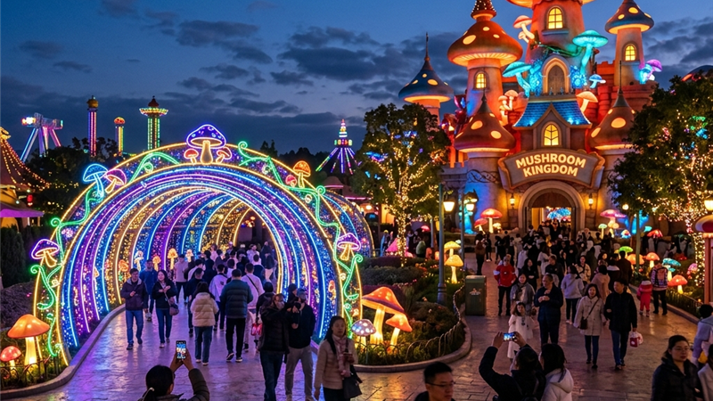

Mikutopia Batu memiliki sekitar 20 hingga 30 wahana bertema jamur, mulai dari roller coaster, bianglala, hingga trampolin, ditambah puluhan spot foto tematik yang instagramable.
- Wahana diberi nama unik yang terinspirasi jenis-jenis jamur, seperti Oyster Coaster dan Portobello.
- Tersedia wahana untuk anak-anak maupun dewasa sehingga cocok untuk kunjungan keluarga.
- Spot foto andalan meliputi terowongan cahaya, kastil jamur, dan gardu pandang menghadap perbukitan.
- Terdapat area edukasi mengenai budidaya jamur khas Desa Tulungrejo.
- Setiap wahana telah melalui pengujian standar keselamatan sebelum dioperasikan untuk umum.
Apa Saja Wahana Utama di Mikutopia Batu?
Wahana utama di Mikutopia Batu meliputi roller coaster bernama Oyster Coaster, bianglala bernama Lactavarius atau Lactarius, wahana kereta bernama Shimeji, dan trampolin bernama Portobello.
Selain wahana tersebut, taman ini juga dilengkapi wahana lain seperti pendulum, komidi putar, dan flying chair, yang seluruhnya diberi nama unik terinspirasi jenis-jenis jamur untuk memperkuat tema Dunia Jamur. Bianglala menjadi salah satu wahana favorit karena menawarkan pemandangan kawasan Bumiaji dan siluet Kota Batu dari ketinggian, terutama saat sore hari ketika kabut tipis mulai turun.
Apa Spot Foto Paling Populer di Mikutopia Batu?
Spot foto paling populer di Mikutopia Batu antara lain terowongan cahaya, bangunan kastil jamur, dan gardu pandang kayu yang menghadap perbukitan Bumiaji.
Terowongan cahaya menghadirkan lorong panjang berhias lampu gantung mikro yang berkedip mengikuti musik latar, sementara bangunan utama berbentuk kastil jamur menjadi latar foto favorit dengan balkon menghadap ke arah Gunung Arjuno. Gardu pandang berbahan kayu menjorok ke arah tebing menawarkan panorama kebun dan kabut tipis khas dataran tinggi, menjadikannya lokasi favorit untuk foto senja.
Apakah Ada Aktivitas Edukasi di Mikutopia Batu?
Ya, Mikutopia Batu menyediakan area edukasi mengenai budidaya jamur yang menjadi bagian dari sejarah lokal Desa Tulungrejo.
Pengunjung dapat mempelajari proses budidaya jamur tiram, jamur kuping, dan jamur kancing di gedung edukasi yang tersedia di dalam kawasan taman. Aktivitas ini menjadikan kunjungan ke Mikutopia tidak hanya sekadar rekreasi dan berfoto, tetapi juga memberikan wawasan tambahan tentang potensi pertanian lokal Bumiaji yang sudah dikenal sejak era 1960-an.
Apakah Wahana di Mikutopia Batu Aman untuk Anak-Anak?
Ya, seluruh wahana di Mikutopia Batu dirancang melalui standar keselamatan dan pengujian teknis sebelum dioperasikan untuk umum, termasuk wahana yang ditujukan bagi anak-anak.
Beberapa wahana seperti trampolin dan area bermain memang dikhususkan untuk pengunjung anak-anak, sementara wahana seperti roller coaster dan flying chair lebih cocok untuk pengunjung remaja hingga dewasa. Orang tua tetap disarankan mendampingi anak-anak selama mencoba wahana, terutama pada wahana dengan elemen ketinggian atau kecepatan.
FAQ Wahana Mikutopia Batu
Berapa jumlah wahana yang tersedia di Mikutopia Batu?
Mikutopia Batu memiliki sekitar 20 hingga 30 wahana bertema jamur yang dapat dicoba pengunjung dari berbagai usia.
Apakah semua wahana memerlukan tiket tambahan?
Sebagian wahana dasar sudah termasuk dalam tiket masuk, sementara wahana lain memerlukan tiket tambahan atau tiket terusan.
Apakah ada wahana yang cocok untuk balita?
Terdapat area bermain dan wahana ringan yang umumnya aman untuk anak kecil, namun sebaiknya tetap didampingi orang tua.
Arya
Siswa Skariga yang sedang belajar di Gm Academy.